Building Assets
Bases, building pieces and work stations, built together to AAA quality, and the survival rules they serve.
Doing The owner's and the Building chat's space (D-30): the Sci-Fi bundle's building pieces
remade into individual parts that players snap together however they like, in tiers of building, and its machines
made into work stations, built together to AAA quality. Pictures of progress and design ideas land here first; the
full plan is the design record's docs/building.md.
Next, and what the owner decides
Next The owner's corner test (D-41) passes: no opening from any angle (every piece closed at its ends and seams; 49 pictures from the game), and in the network test a watching player's game drew each corner's post in the same frame as the wall that forms it (the first two pictures below). Next: the commit, then the rest of the set (triangle foundation and floor, half wall, wall frame, door, stairs, ramp) and the build tool with its ghost preview.
In the build Nothing waits on the owner for this tab right now.
Decided for this tab
| ID | Decision | Date |
|---|---|---|
D-30 | Players build bases from the Sci-Fi bundle's building pieces, remade into individual parts that snap together however the player likes, in tiers of building. | 2026-10-19 |
D-33 | Building tiers: Wooden Fiber, Salvaged Mineral, Enhanced Alloy and Biotech; the bundle's 4.5 m storey; the Hyper template's building system only a reference. | 2026-10-19 |
D-41 | Corner posts are a piece of their own that the game places and removes itself, wherever exactly two walls meet at a right angle on a storey (an outside or an inside corner); a straight run, a T, a cross or a free end gets none, and players never place one. | 2026-10-20 |
Progress

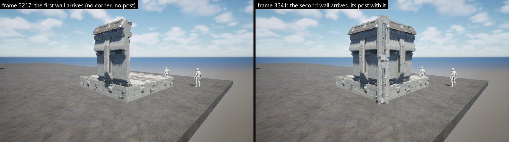

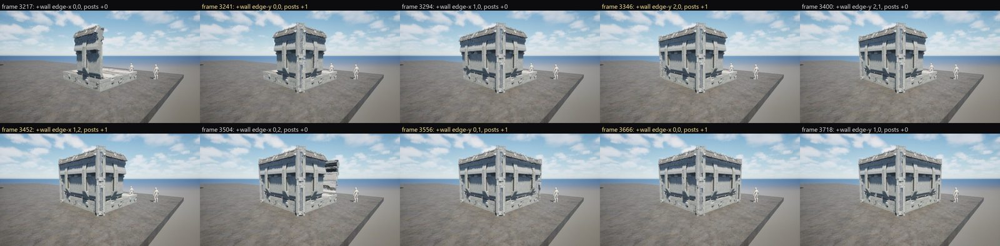

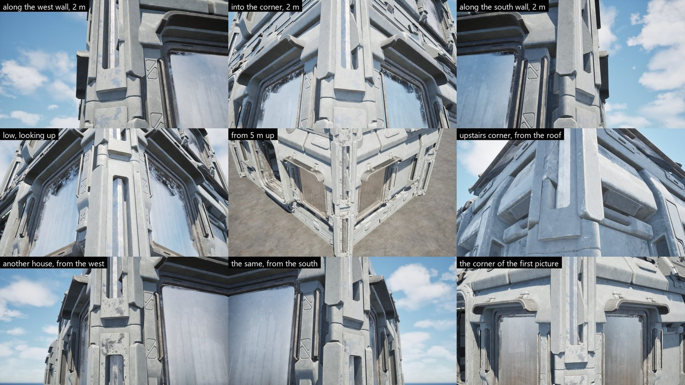

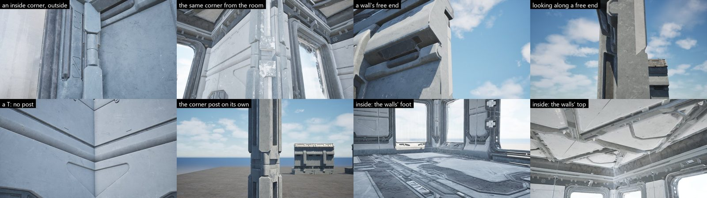

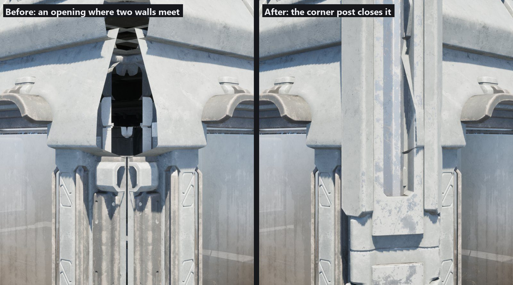

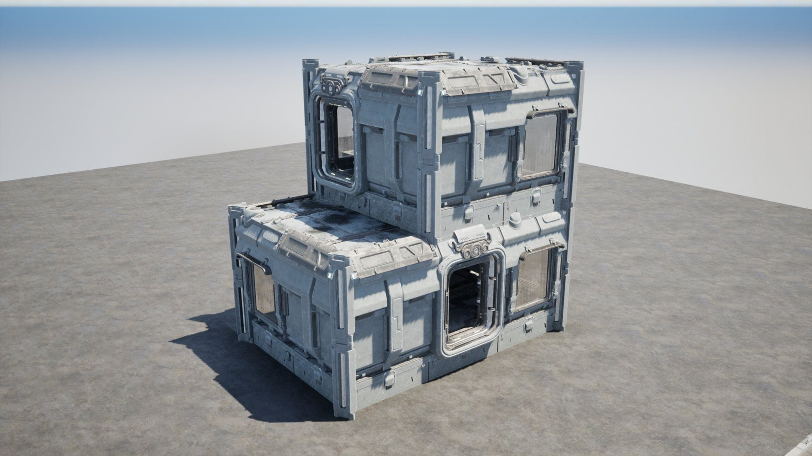

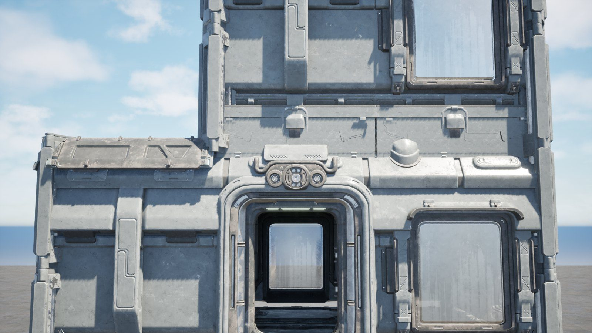

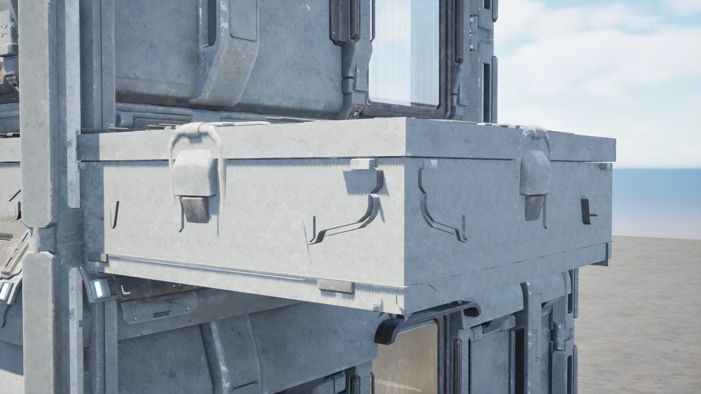

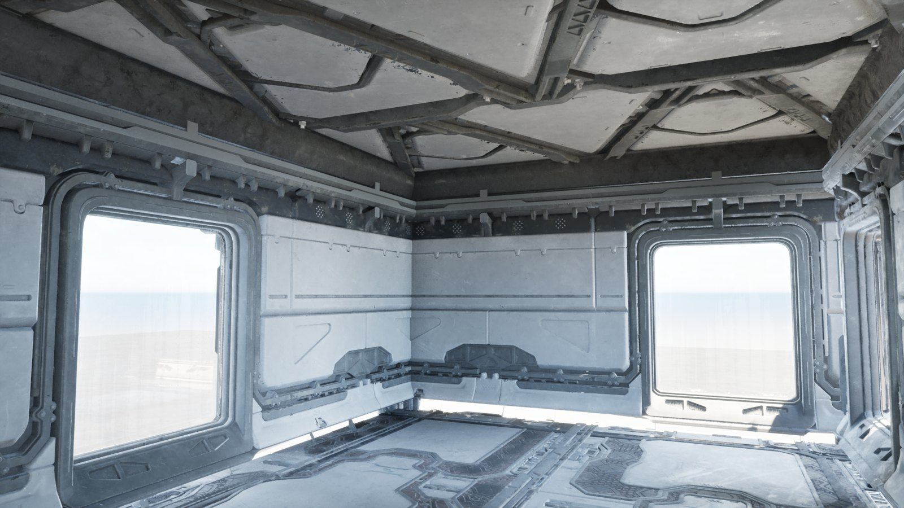

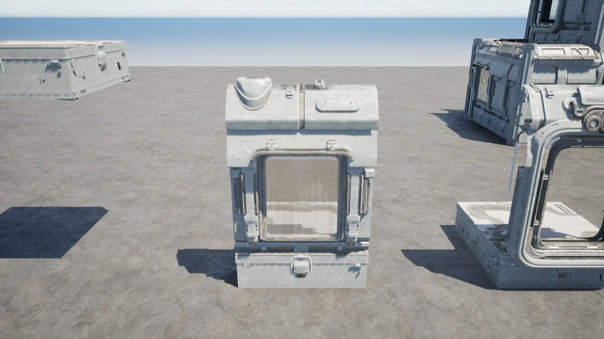

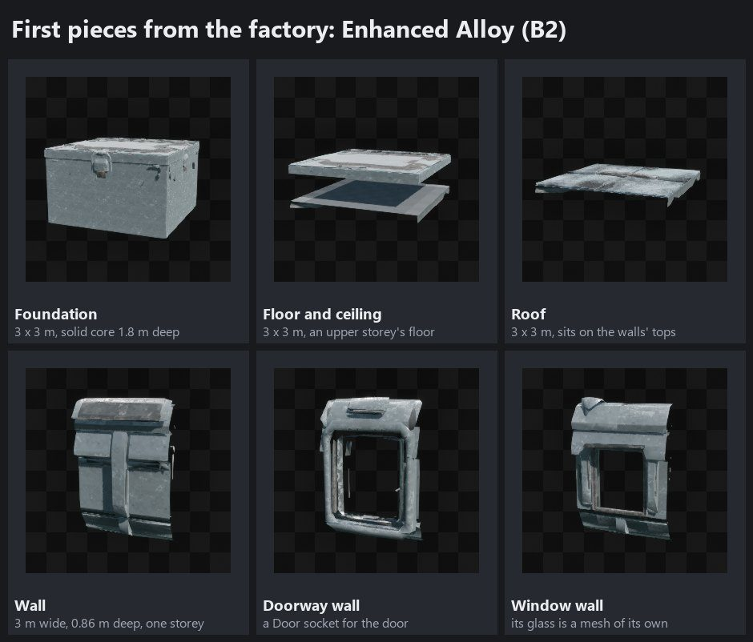

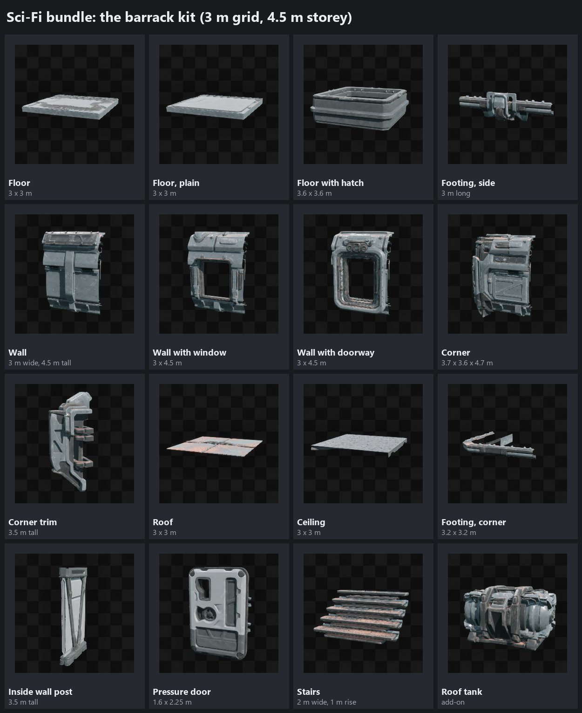

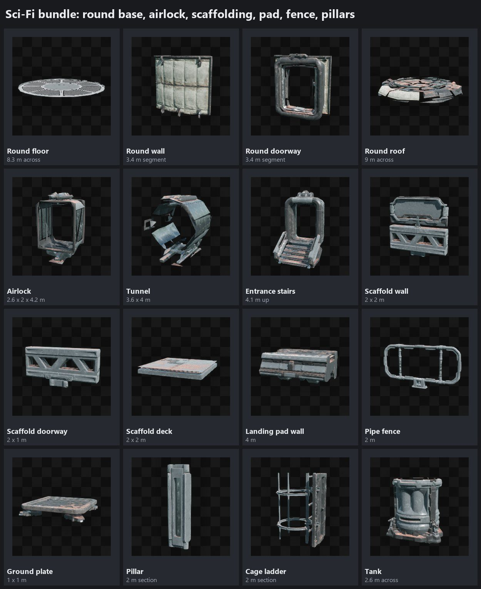

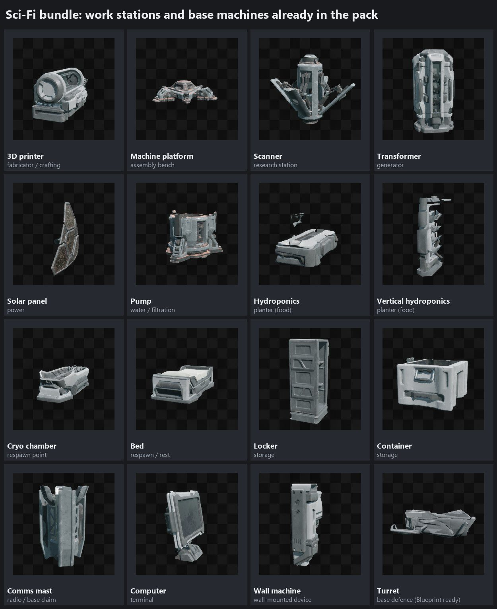
Design ideas

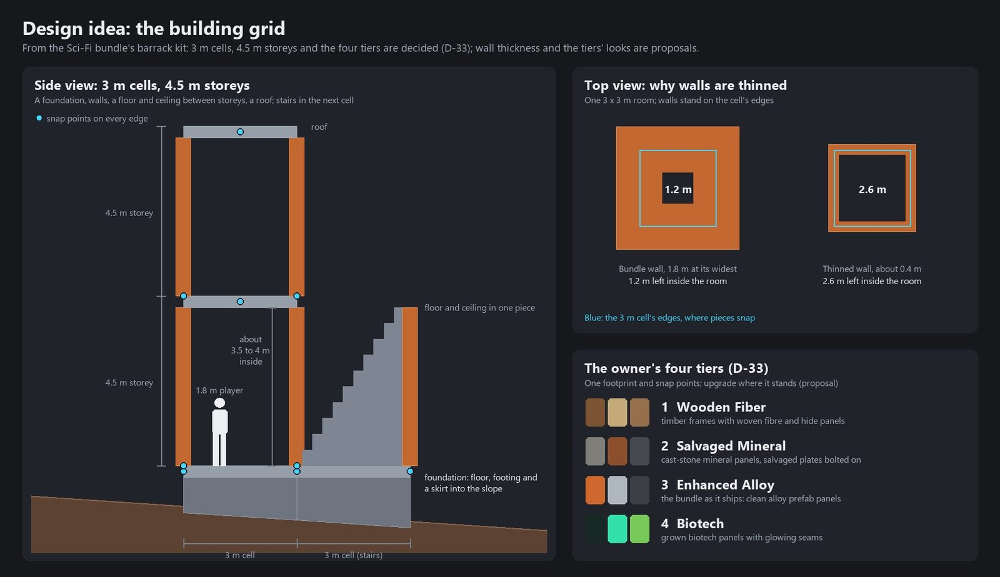

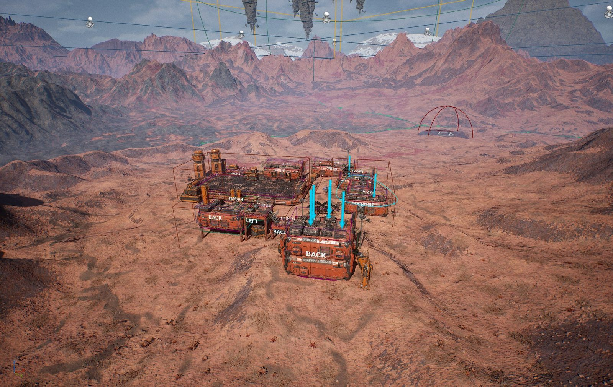

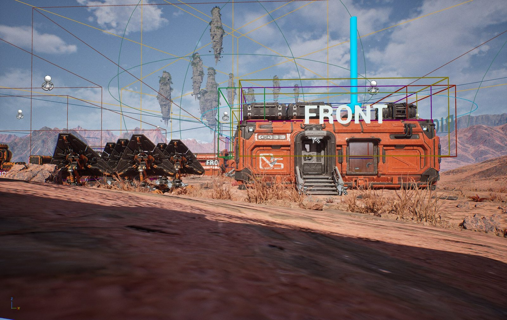
Tiers of building
Designed The owner named the four tiers (D-33); how each looks and is made are proposals. Every tier keeps the same footprint and snap points, so a piece upgrades where it stands, and the bundle's own damage value shows wear as a piece loses health.
| Tier | Look | How it is made | Needs |
|---|---|---|---|
| 1 Wooden Fiber | The first shelter: timber frames with woven fibre and hide panels, lashed together | Its own simple pieces (frames and panels) on the same footprint and snap points; new art (B5) | Wood and organic fibre; from the start |
| 2 Salvaged Mineral | Rough mineral panels like cast stone, salvaged plates patched and bolted on | The bundle's shapes with a salvaged-mineral look (stone and rust colours, heavy dirt and damage) and bolted patches | Mineral and alloy scrap |
| 3 Enhanced Alloy | The bundle as it ships: clean alloy prefab panels in colony colours | The remodelled bundle pieces | Alloy; panels printed at the fabricator |
| 4 Biotech | Living technology: grown biotech panels with glowing seams | The bundle's shapes with biotech growth and glow (new detail, B5) | Biotech cores and a blueprint (GDD 04: higher tiers need blueprints) |
Which AI does what
Nothing new needs connecting to start. The remodel is exact cutting and joining, which Claude does in the editor: generated meshes are one sculpted lump with baked textures, so they would not snap on a 3 m grid or take the bundle's paint, dirt and damage. AI generation comes in for art the bundle does not have.
| Job | Tool | Connected now? | Cost |
|---|---|---|---|
| Cut, join and re-pivot the bundle's pieces; snap points, collision, Nanite; each tier's colour, dirt and damage preset | Claude in the Unreal editor: Geometry Script from editor Python (its plugin is loaded in Tharrn's editor), run in a second editor in the background so the open one is not disturbed; Unreal MCP for checks and pictures | Yes | Free |
| New shapes the bundle lacks (triangle pieces, ramps, scrap plates); cleaning up generated meshes | Claude scripting Blender 4.1 (installed), or Unreal's modelling tools | Yes | Free |
| Concept pictures of each tier's look; build-menu icons | Higgsfield's image models | Yes: free plan, 10 credits | Credits |
| One-off props and new work stations from a picture | Higgsfield's 3D models: Meshy 7, Tripo H3.1 and P2, Hunyuan3D v3 (Meshy and Tripo can also make low-poly or quad meshes) | Yes, but 10 credits is one or two tries | 5 to 25 credits a model (Higgsfield's prices on 2026-10-19: Tripo 5, Hunyuan3D 3.1 Pro 16, Meshy 6 with PBR 25) |
| The same kinds of models through another account | fal.ai | No (no FAL_KEY) | — |
Work stations from the bundle
| Role | Bundle piece | Blueprint |
|---|---|---|
| Fabricator (crafting; prints colony panels) | 3D printer | BP_Printer |
| Assembly bench (weapons, armour, fortified panels) | Machine platform and arm | — |
| Research station | Scanner | BP_Scanner |
| Generator | Transformer | BP_Transformer |
| Solar generator | Solar panel (turns to the sun) | BP_SolarPanel |
| Water pump and filtration | Pump (start, middle, end), tank | BP_Pump |
| Planters (food) | Hydroponics, flat and upright | BP_HydrophonicHoriz1, BP_HydrophonicVer1 |
| Storage | Lockers, shelves, containers, cargo | BP_Locker1, BP_Locker2, BP_Shelf1X, BP_Shelf2X, BP_ContainerBox1 to 3, BP_ContainerCargo1 and 2 |
| Respawn point and bed | Cryo chamber, bed | BP_CryoChamber, BP_Bed |
| Base claim and radio | Comms mast | BP_Comms |
| Terminal (tech tree, base menu) | Computers and wall screens | BP_Computer_Desk1, BP_Computer_Wall1 and others |
| Lights (they use power) | Floor, wall, roof and portable lights | BP_Light_* |
| Defence | Turrets: machine gun, laser, missile launcher, with stands | BP_Turret_*, with turret and ammo data assets |
Steps
| Step | What | State |
|---|---|---|
| B0 | The bundle's pieces measured and pictured; the remodel, the AI and tools, the tiers and the work stations proposed (this page) | In the build 2026-10-19 |
| B1 | The owner's choices: the tiers, the storey height, the Hyper template | In the build 2026-10-19 (D-33) |
| B2 | Piece factory: Data/BuildPieces.csv and Tools/Building/build_pieces.py (Geometry Script in a background editor) make every piece under /Game/Tharrn/Building from the bundle's meshes | In the build 2026-10-19: six pieces, RESULT ok (game repo c509229) |
| B3 | A gallery level with pictures from the game; the open points of the piece factory (section 7); the rest of the Enhanced Alloy set (the bundle's look): triangle foundation and floor, half wall, wall frame, door, stairs, ramp | Doing the gallery built and photographed from the game; the openings it showed closed (corners, floor edges, the line between storeys); the corner post added (game repo 42bc60a); every piece closed at its ends and seams, 49 pictures from the game round every junction (2026-10-20) |
| B4 | The building system in C++: build tool, ghost preview, snapping, checks, placing, removing and upgrading on the server; corner posts added and removed where two walls meet at a right angle (D-41); instanced drawing | Doing the core done and checked 2026-10-20 (section 7): 5 tests pass; the network test passes (a builder, a watcher, a late joiner, 50 ms latency and 1 % loss); next the build tool and ghost preview, removing and upgrading with what rests on a piece, collision in play |
| B5 | Tier looks: the Wooden Fiber pieces; colour, dirt and damage presets and new detail for Salvaged Mineral and Biotech (Higgsfield or Blender) | Designed |
| B6 | Work stations and base machines from the bundle (section 6), replicated | Designed |
| B7 | Base rules (GDD 03): power grid, decay, claims, damage, saving the base | Designed |
| B8 | A large base within the budget (D-11); the owner's play-test | Designed |
Survival rules the bases serve
Designed From GDD 03. Five vitals change how you fight, not only whether you live.
| Vital | Range | What it does |
|---|---|---|
| Hunger | 0–100 | Below 30, stamina recovers 40 % slower |
| Hydration | 0–100 | Below 30, aim sway grows by 25 % |
| Temperature | Comfort range set by your armour | Outside it you take damage over time and move slower |
| Radiation | Builds up | Past thresholds it lowers your stats for a long time; needs detox |
| Neural stability | 0–100 | Low values bring hallucinations (visual noise, phantom enemies) and aim jitter |
The formulas
StaminaRegen = BaseRegen × (1 − HungerPenalty) × (1 − TempPenalty)
AimSway = BaseSway × (1 + (30 − Hydration)/100 × 0.8 + (100 − Neural)/100 × 0.5)Open question As written, a well-hydrated player sways less than normal (at full hydration and
neural stability the sway multiplier is 0.44). The build (P5) counts the hydration term only below 30,
max(0, 30 − Hydration), so thirst only ever adds sway: a proposal to confirm with the owner.
Resources
OrganicMineralAlloyBiotech coreEnergy crystal
Resource nodes grow back on timers (each zone has its own, see World and zones). Rare nodes appear in flagged PvP zones.
Base rules
| Part | How it works |
|---|---|
| Modules | Foundation, wall, door, turret, generator, filtration, crafting bench |
| Power | Generators make energy, devices use it; too many devices on one network overloads it and it shuts down |
| Decay | Structures nobody maintains decay, by default 1 % a day |
| Claims | Plots in PvP zones can be claimed, with timers and upkeep costs |
The pieces are the Sci-Fi bundle's own, remade into individual parts on its 3 m grid (above). Placing shows a ghost preview that snaps to other pieces; the server checks every placement.
Inventory and crafting
- A grid inventory with a weight limit, filters by type and quick-craft recipes.
- You ask to craft; the server checks the recipe and your inventory, then changes both. Crafts wait in a queue.
- In the build The prototype crafts a bandage from organic fibre and rounds from mineral and alloy scrap, five crafts at a time; cancelling gives the inputs back.
The first milestone
Hunger, hydration and temperature working online and driving the two formulas (with tests at the thresholds); crafting a bandage and ammo; a foundation, a generator and a bench that two players can place and both see.